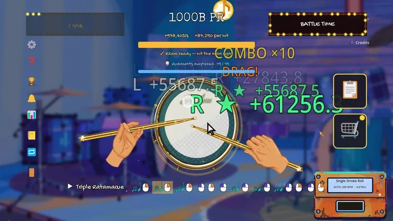
De las tablas clavadas a las baquetas de oro
Empiezas tocando sobre unas tablas clavadas con dos ramas por baquetas. Acabas a 200 BPM con baquetas de oro macizo, un pad de concierto y números que ya no caben en pantalla.
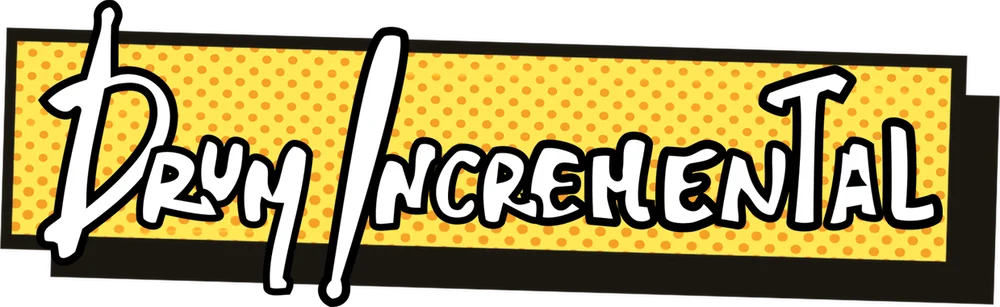
El juego incremental donde cada clic tiene ritmo.
Pruébalo aquí mismo
Clic izquierdo es tu mano izquierda; clic derecho, la derecha. Sigue el patrón, tócalo limpio tres veces seguidas y el profesor te deja avanzar. En el móvil, toca la mitad izquierda o derecha del pad.
Ratón: clic izquierdo / derecho
Teclado: F y J (o ← →)
Táctil: mitad izquierda o derecha
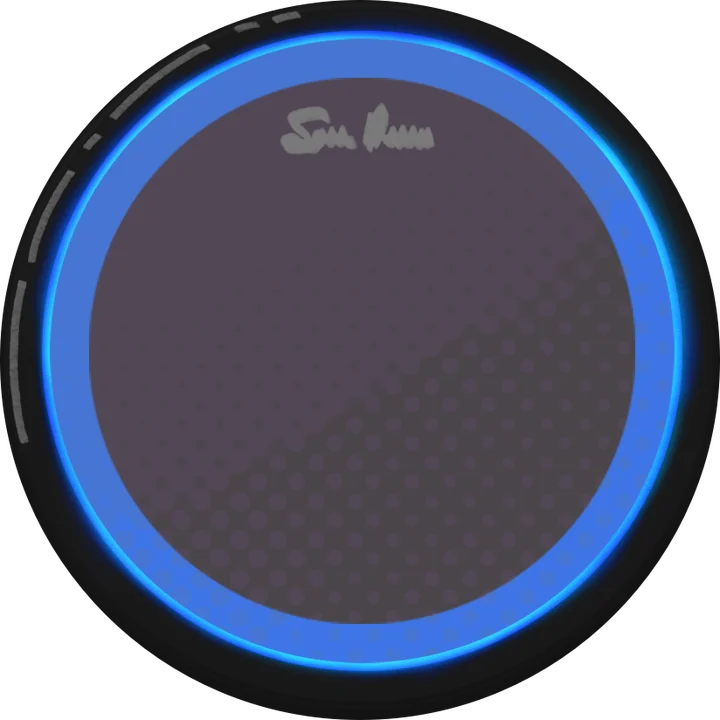
El juego completo tiene 40 rudimentos reales de percusión, 5 fases con un examen en cada puerta, notas doradas, modo jam y una banda sonora original que sigue tu tempo.
Tráiler
El tráiler se carga desde YouTube solo cuando le das al play.
El juego
Un juego idle/incremental construido sobre técnica real de percusión. No hace falta saber música: los patrones se aprenden solos mientras juegas.

Empiezas tocando sobre unas tablas clavadas con dos ramas por baquetas. Acabas a 200 BPM con baquetas de oro macizo, un pad de concierto y números que ya no caben en pantalla.
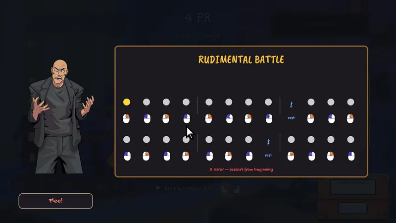
Para pasar de fase hay que aprobar su examen. Fallas una nota y se molesta, luego se enfada, luego se pone furioso. Tocas limpio y se calma, cara a cara.
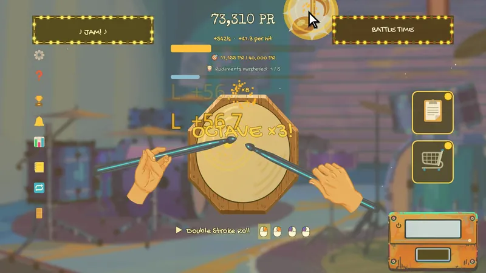
Caen notas doradas por el pad: pasa el ratón por encima para cazarlas. Ocho seguidas suben una escala mayor real hasta la octava y triplican la recompensa.
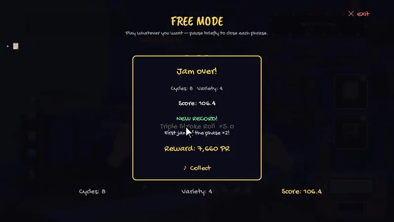
Llena el cartel ♪ JAM y tienes toque libre: el juego reconoce y nombra cada rudimento que tocas y puntúa la variedad.
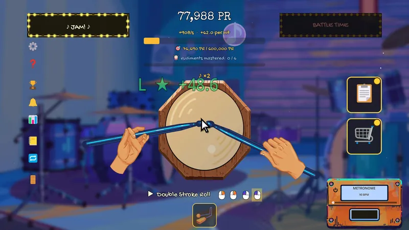
Desde la fase 3 algunas notas caen translúcidas y más rápidas, y valen el triple. La torreta del metrónomo no las ve. Solo tú.
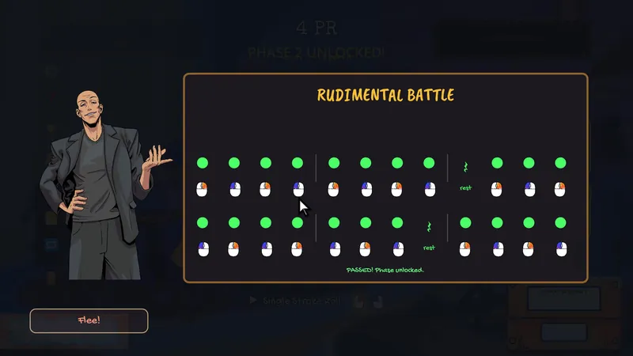
Cinco fases y 40 rudimentos, del Single Stroke Roll al Triple Ratamacue, cada uno un patrón real de percusión.
Tu examinador
Dibujado por Alba Fariña. Te está mirando la mano izquierda.
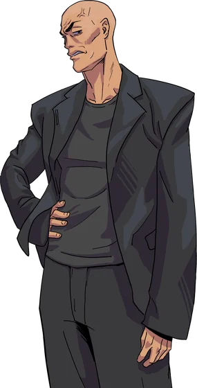
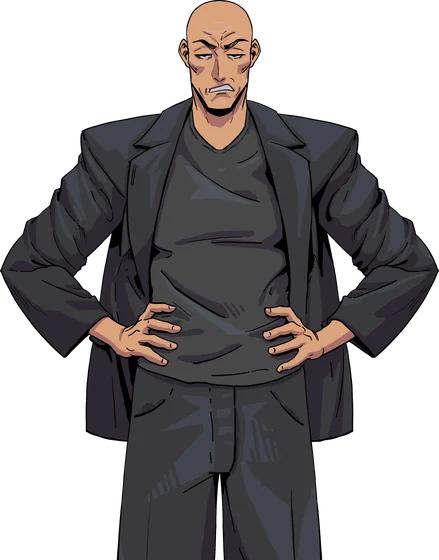
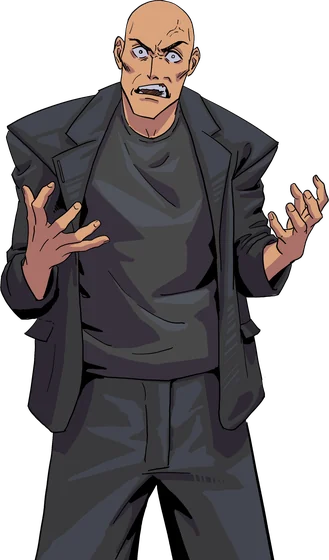
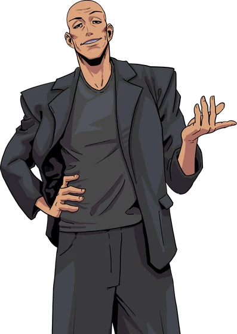
Quién lo hace
Diseño, programación y música original. Un percusionista que quería que practicar se sintiera como progresar.
Arte. Cada pad, cada baqueta, cada perk y cada cara del profesor son obra suya.
Asesoría musical. Percusionistas que se aseguraron de que cada rudimento es el de verdad.
La demo gratis se estrena en el Steam Next Fest, del 19 al 26 de octubre, y el juego completo sale el 2 de noviembre. La lista de deseados es la mejor forma de decirle a Steam que quieres verlo.
Añádelo a tu lista de deseados